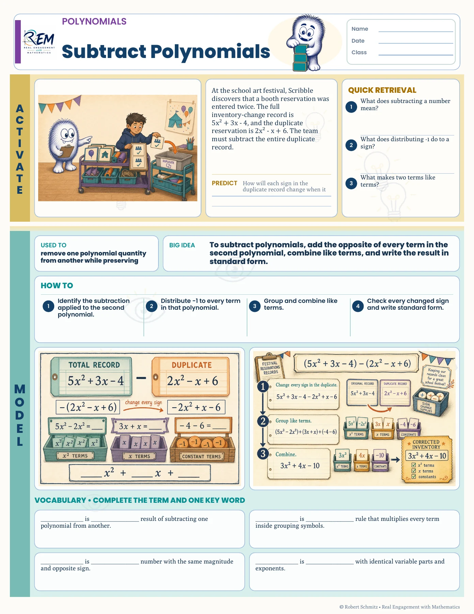
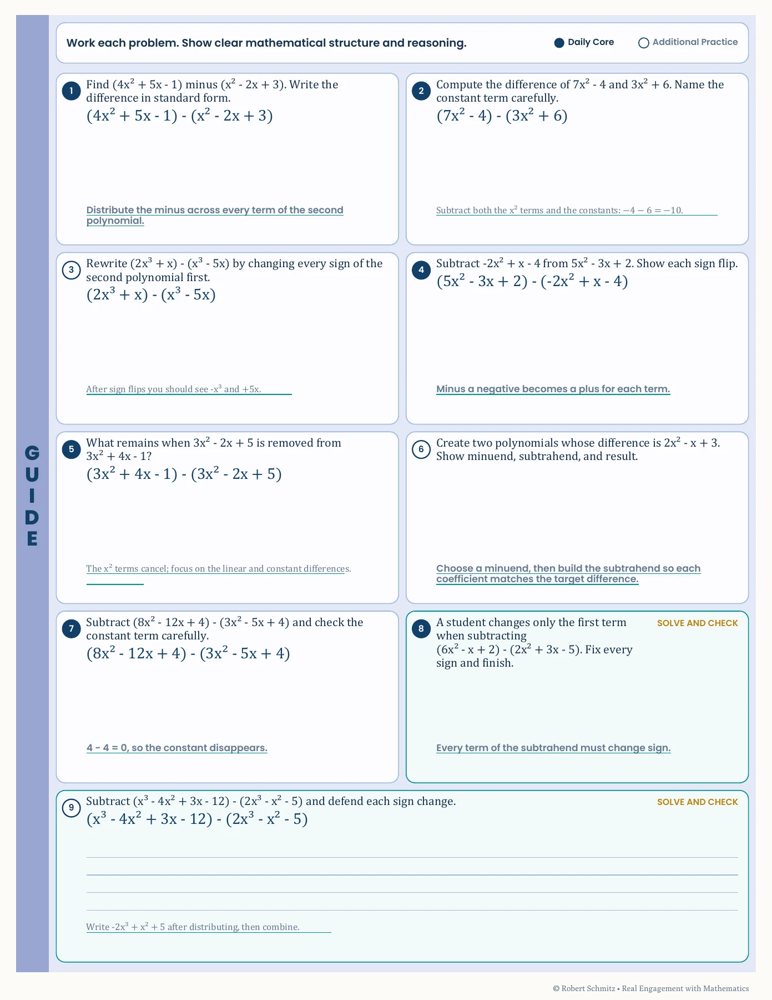
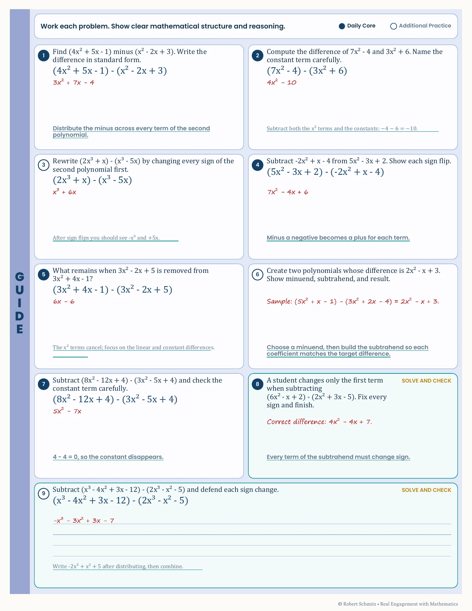

{kind=link}
{kind=link}
{kind=link}
Keep the learning sequence recognizable
Activate, Model, Guide, Apply, and Reflect provide a repeatable structure. The content changes while learners retain a familiar path through the lesson.
Scaffolded lesson · Student and teacher editions
A familiar lesson structure guides learners from a concrete problem to independent mathematical work.
Guided Notes Subtracting polynomials
See the actual materials ↓The learner experience
Subtracting a polynomial means changing every sign in the quantity being removed. This lesson introduces that idea through a story, makes the process explicit, and moves into guided practice, independent application, and reflection.
Connect the subtraction to a context and inspect the four-step process.
Work the Daily Core and Additional Practice tasks with printed hints.
Move to independent work and reconstruct why the process protects every sign.
Inside the resource
Selected pages from the actual resource files. Open any page to inspect the details.

Student lesson, page 1. A story, retrieval questions, a model, and vocabulary introduce polynomial subtraction.

Student lesson, page 2. Printed hints and a Daily Core / Additional Practice split organize the work.

Annotated teacher lesson, page 2. The same tasks carry worked support in red.
Why I designed it this way
Activate, Model, Guide, Apply, and Reflect provide a repeatable structure. The content changes while learners retain a familiar path through the lesson.
The annotated teacher edition uses the same page layout. Worked reasoning appears where the learner’s responses belong, making comparison straightforward during instruction.
Evidence & next evaluation
These authored materials show the activity structure and design decisions. Learner outcomes have not yet been measured for this case study.
Inspect sign errors across guided and independent tasks, then ask learners to explain a new subtraction without the printed hints.